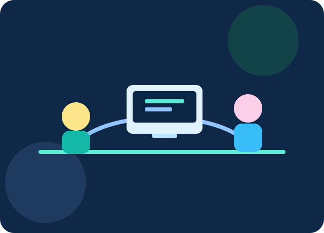

Who it is for
- Students and young learners
- Beginners with limited computer experience
- Parents and community members
- People learning online safety
- People who want to use technology responsibly
Community technology
DigitalBridge is a free educational website. It explains beginner computer skills, online safety, electronic waste, and places to keep learning. No account is required.
For beginnersPlain-language lessons, not a technical manual.
Safety firstAwareness tips only. No harmful tools.
Private by designThe quiz does not ask for your name or email.

Purpose
Digital literacy means being able to use digital tools and judge digital information with care. UNESCO describes media and information literacy as support for people to engage critically with information and navigate the online environment safely. DigitalBridge turns that idea into short lessons for everyday computer use.
Learning categories
Hardware, software, files, browsers, and how to check information before you trust it.
Open the lessonsPasswords, phishing warnings, personal information, social media privacy, and what to do if something looks wrong.
Learn safety habitsWhat electronic waste is, why disposal matters, and how repair, reuse, and proper recycling help.
See e-waste guidanceLinks to real free lessons and public guidance from libraries, educators, and government agencies.
Browse resourcesTen multiple-choice questions with instant feedback, explanations, a score, and a retry button.
Start the quizHow this student project applies intellectual property, privacy, accuracy, accessibility, and accountability.
Read the ethics pageOnline safety
Criminals send messages that look familiar and ask people to click, pay, or share a password. Cybersecurity agencies teach a simple response: recognize the warning signs, do not use the link in the message, and contact the organization through an address you already know.
Read the safety guideResponsible technology use
Responsible use includes giving credit for other people's work, keeping private details private, speaking respectfully, and not throwing electronics into ordinary trash. Small habits protect people and reduce waste.
Learn about e-wasteCommunity benefits
Beginners get words for hardware, files, browsers, and search so everyday tasks feel less confusing.
Parents and students can use the same safety examples when they talk about messages, passwords, and privacy.
The resource page points to public lessons and official guidance instead of inventing a local help desk.